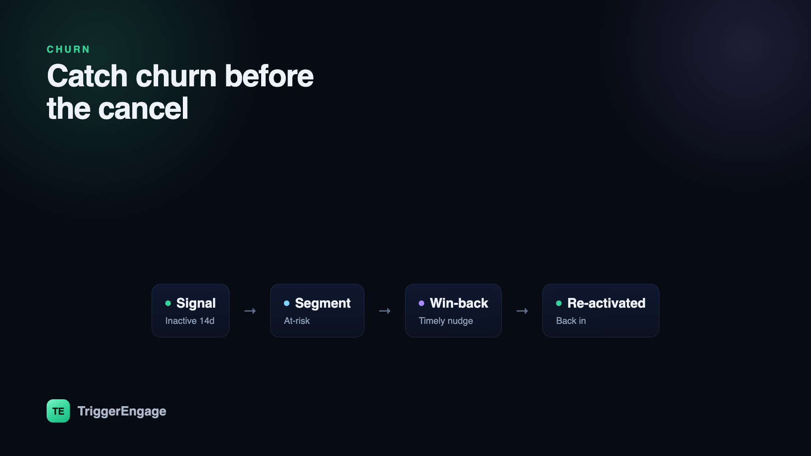

Most churn is quiet. Users don't storm out — they drift away, opening your app less, skipping the feature they used to love, letting a card expire, until one day the subscription lapses and they barely notice. By the time someone clicks "cancel," the decision was made weeks ago. The good news: automated messaging, triggered by the right behavioral signals, lets you reduce churn by catching people mid-drift, while you can still win them back. Here's the playbook.

Why messaging is a churn lever
Retention is not won at the cancellation screen. It's won in the days and weeks when engagement is quietly fading — the slow fade that precedes almost every voluntary cancellation. A user who logged in daily now logs in weekly. A team that invited five seats now has one active. Nobody has churned yet, but the trajectory is set.
Messaging is the cheapest, fastest lever you have to bend that trajectory. A timely, relevant nudge — reminding someone of value they've left on the table, surfacing a feature that solves the exact problem they came for, or simply asking what went wrong — can re-activate a user before the fade becomes terminal. It won't fix a broken product, but for the large slice of churn that comes down to inattention, forgotten value, and friction, the right message at the right moment is remarkably effective. The catch is that "right moment" has to be defined by behavior, not by a calendar.
Spot at-risk users early
You can't rescue a user you haven't noticed slipping. Start by defining the signals that reliably precede churn for your product. The common ones:
- Declining usage — session frequency or core-action count trending down week over week.
- No login in N days — the bluntest and often most predictive signal.
- Unfinished onboarding — signed up, never reached the activation milestone that predicts long-term retention.
- Failed payment — the leading cause of involuntary churn, entirely recoverable with the right follow-up.
- Dropped a key feature — stopped using the sticky feature that correlates with staying.
The mistake teams make is checking these signals manually, in a dashboard, once a month. Instead, turn each one into a behavioral segment that maintains itself. A segment like "inactive 14 days" should fill and empty on its own: the moment a user crosses 14 days without a session they enter, and the moment they return they leave — no CSV exports, no manual tagging. This is exactly what self-updating segments are for. Tools like Trigger Engage build these segments from your event stream and keep them current in real time, so your messaging always targets who's actually at risk right now — not who was at risk when someone last pulled a report.
The anti-churn playbook
Once you can see risk in real time, each signal maps to a specific play. Here's how the moving parts fit together.
Prevent early churn with strong onboarding
The highest churn happens before a user ever gets value — the classic "signed up, never activated" drop-off. A well-built onboarding flow closes that gap: guide people to the first meaningful outcome, one step at a time, and follow up when they stall. See our onboarding emails for templates you can adapt. Every user you activate is a user who never enters your win-back funnel in the first place — prevention beats recovery every time.
Usage nudges when engagement dips
For activated users whose usage starts sliding, a gentle nudge often re-engages them. Trigger it off the dip itself: when someone's weekly core-action count falls below their own baseline, send a message that reconnects them to value — a summary of what they're missing, a new feature relevant to their workflow, or a one-click path back to where they left off. The point is relevance, not volume.
Win-back sequences for lapsed users
When a user has genuinely gone quiet — say, 14 or 30 days inactive — move from nudge to win-back. A win-back sequence is a short, escalating series: remind them of the value, surface what's new since they left, and if that doesn't land, make an offer or simply ask what went wrong. The reply to "what made you stop?" is some of the most valuable retention data you'll ever collect.
Dunning for failed payments
Involuntary churn — subscriptions that lapse because a card expired or a charge failed — can be a shockingly large share of total churn, and it's the easiest to recover. A dunning sequence automatically emails (and texts) the user when a payment fails, prompts them to update their card, and retries on a schedule before the account downgrades. Recovering even half of failed payments can move your net retention meaningfully.
Go multi-channel
Email is the workhorse, but a lapsed user is by definition someone who's stopped paying attention — and may have stopped opening your emails. A well-timed push notification or SMS can reach someone the inbox can't. Match the channel to the moment: push for time-sensitive re-engagement, SMS for high-stakes events like a failed payment, email for the richer, explanatory content.
| Signal | Message | Channel | Timing |
|---|---|---|---|
| Onboarding stalled | Nudge to the activation milestone | 24–48h after sign-up | |
| Usage dip below baseline | Value reminder + relevant feature | Push / email | Within a day of the dip |
| Inactive 14 days | Win-back: what's new + why come back | Email, then push | Day 14, escalate to day 21 |
| Failed payment | Dunning: update your card | SMS + email | Immediately, retry over 7 days |
| Dropped key feature | Re-introduce the feature + quick win | When usage hits zero for 7 days |
Timing and frequency
Speed matters: when a signal fires, reach out while the moment is still live. A failed-payment message an hour later beats one three days later; a win-back at day 14 beats one at day 45. But speed has a twin, and it's restraint. Over-messaging accelerates churn — nothing pushes a wavering user to unsubscribe faster than a barrage of "we miss you" emails.
The single most important safeguard is a goal on every sequence: define the re-engagement event that means "this worked," and stop messaging the moment it happens. If your win-back exists to get someone to log in, then a login should immediately exit them from the sequence. Users who come back should never receive the next "please come back" email — it's the fastest way to undo the win. Set frequency caps across all your sequences so a single user can't be caught in three campaigns at once, and lean on the same discipline that governs healthy lifecycle email sequences and drip campaigns: goal-based exits, sane caps, and messages that stop when their job is done.
Measure what works
Open rates will tell you almost nothing about churn. Measure outcomes, not engagement theater:
- Reactivation rate — of users who entered an at-risk segment and got messaged, what share returned to active use?
- Cohort retention curves — compare retention for cohorts exposed to your messaging against a holdout. The gap is your real impact.
- Movement out of the "at-risk" segment — because your segments self-update, you can watch users flow out of "inactive 14 days" and stay out. Net movement out of risk is the truest scoreboard you have.
Hold out a control group wherever you can. "We sent 50,000 win-back emails" is an activity metric; "the messaged cohort retained 6 points higher than the holdout" is a result. Optimize for the second.